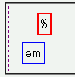
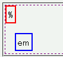

表要素（display: table;）を相対配置または絶対配置するとき、leftプロパティやtopプロパティを%単位の値で指定すると無視されてしまう。
<div style="height:5em; border:1px dashed purple;"> <table style="position:relative; left:5%; top:10%; border:2px solid red;"> <tr><td>%</td></tr> </table> <table style="position:relative; left:1em; top:1em; border:2px solid blue;"> <tr><td>em</td></tr> </table> </div>
| % |
| em |
前者（赤色のボーダー）のtable要素はleftプロパティとtopプロパティを%単位で、後者（青色のボーダー）のtable要素は同じくem単位で指定したものです。
WinIE6.0での表示（標準モード）
N7.02での表示（標準モード）
%以外の単位（em, ex, px, in, cmなど）を使用した場合は正しく配置することができます。
Netscape7.02、Mozilla1.4RC2で不具合の発生を確認しました。